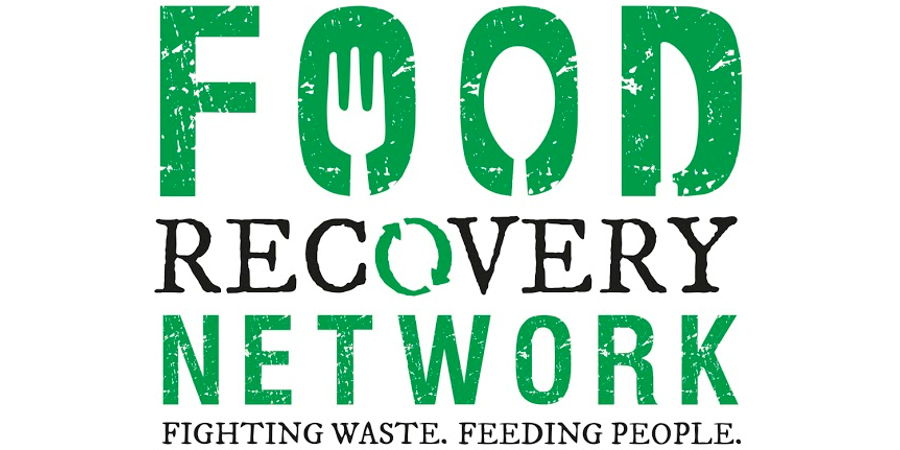
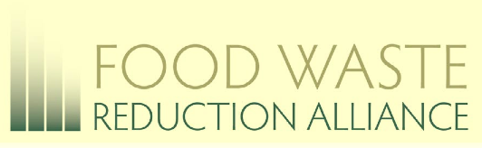
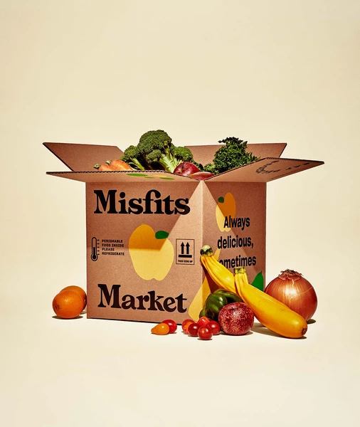

The rate of homelessness in New York alone is steadily increasing as living in the city is growing less and less affordable. More people have taken residence on New York’s sidewalks with an increase of 9% in 2016.Due to lack of funding, shelters and transitional housing units have seen a decrease in occupancy by 3%. Many that have reached poverty and homelessness rely on programs that are usually funded by private institutions like churches and charities. These programs help to provide temporary shelter as well as hot meals. Meals provided are usually in small portions and may be given once or twice each day. How YOU can help and what is local to you.
Organizations like The Food Waste Reduction Alliance, and The Food Recovery Network, are working towards encouraging restaurants and like businesses to donate their unwanted goods. The Food Waste Reduction Alliance aims to help reduce the high levels of food waste by creating sources that accept donations to provide and recycle food. The Food Recovery Network is a movement created by students who recognized the intense amounts of food waste in the U.S.; they took measures to join the food recycling and donating movement to aide hunger and poverty. By recycling food we can take responsibility for what we waste. There are many google-able locations that we can find in our areas like pantries and food banks in our communities.
City Harvest, New York Common Pantry, and The Food Bank of New York are examples of places that accept food donations. These locations are open daily to all of those who would like to join the movement and/or get simple foods for themselves, family, or anyone in need of a meal. And for those who are more comfortable with the internet, introduced in 2018, The Misfits Market. Individuals can subscribe (from a set of options) to have un-aesthetically pleasing fruits and vegetables delivered straight to their door. They are farm-fresh items that farmers don't give to larger food prodcution companies. Misfits Market procceeded to raise $16.5 to continue to support small farms and debunk food waste. Although they are expanding, they are based in New York and promote shipping to all zip codes in New York City. If you would like to support, click the Misfits photo below.  Copyright © 2019 Daraja Gonsalves - All Rights Reserved